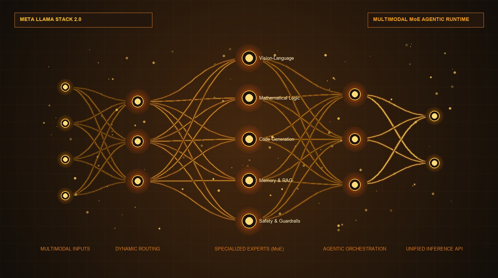

Meta Releases Llama Stack 2.0 & Frontier Multimodal MoE Architecture for Enterprise Agentic Ecosystems

MENLO PARK, CA — September 01, 2026 — In a strategic move to solidify open-source AI as the default foundation for enterprise automation, Meta has officially released Llama Stack 2.0 alongside a next-generation sparse Mixture-of-Experts (MoE) multimodal architecture.
1. Solving Enterprise Fragmentation with a Standard Agentic Runtime
As enterprise AI transitions from simple prompting to complex autonomous agent fleets, engineering teams face significant architectural fragmentation: custom tool integrations, disparate RAG pipelines, bespoke safety guardrails, and locked-in cloud runtimes.
Llama Stack 2.0 solves this by defining an open, standardized set of modular API specifications. Developers can now write agentic logic once and run it seamlessly across cloud hyperscalers, on-premise private GPU clusters, and edge devices without changing a single line of orchestration code.
"Open source is driving the frontier of practical AI. With Llama Stack 2.0 and our native Mixture-of-Experts architecture, we are giving every business, developer, and research lab the tools to build and deploy sovereign, enterprise-grade AI agents with full ownership of their data and infrastructure."
2. Sparse MoE Routing: Frontier Intelligence with Extreme Efficiency
The centerpiece of the update is Meta’s new sparse Mixture-of-Experts (MoE) design. Rather than activating all parameters on every token pass, dynamic learned routing activates only the specialized sub-networks needed for a given task:
Core Pillars of the Llama Stack 2.0 Architecture
3. Multimodal Integration: Vision, Audio, and Reasoning Co-Trained
Llama Stack 2.0 provides native multimodal ingestion:
- Cross-Attention Vision Encoders: Direct parsing of high-resolution schematics, documents, charts, and video streams at native resolutions.
- Low-Latency Speech & Audio: Direct tokenization of acoustic waveforms for natural conversational turn-taking without intermediate speech-to-text latency.
- Episodic Agent Memory: Pluggable vector store providers allowing agents to recall past interactions and customer context across long enterprise sessions.
4. Broad Hardware Ecosystem Support
Meta has partnered with major semiconductor and cloud providers—including NVIDIA, AMD, Intel, Qualcomm, AWS, Microsoft Azure, and Google Cloud—ensuring day-zero hardware optimization across data center racks and client laptops.